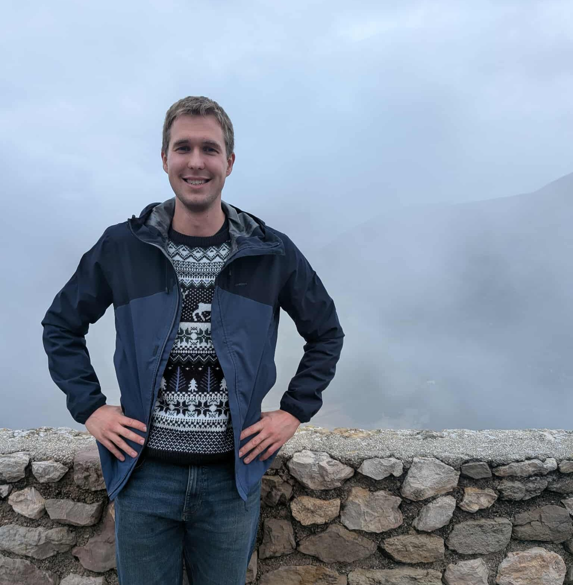

Lawrence Hollom
lawrence.hollom@epfl.ch
Google Scholar
arXiv
CV
I am a postdoc at EPFL, working with Marius Tiba.
I recently completed my PhD at the University of Cambridge, supervised by Béla Bollobás.
My research interests cover a range of extremal, probabilistic, infinitary, and geometric combinatorics.
Preprints
Publications
Last updated June 2026.